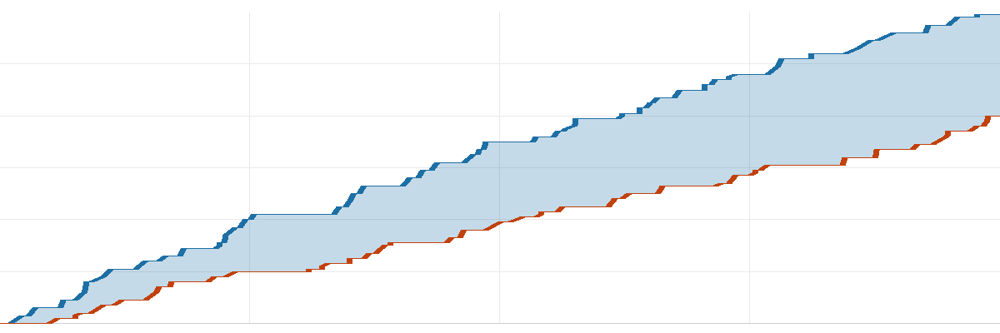

去球吧·NBA 每日战报
2026-11-06美国时间
共 9 场 ｜ 每行格式：客队 比分 : 比分 主队
今天 9 场，最胶着的是森林狼 115-109 鹈鹕：交替领先 13 次，打平 6 次，直到终场分差都没超过 5 分。
焦点球星4 人
东契奇53分5板 5助砍下 53 分 · 单节 20 分·湖人 胜 开拓者
詹姆斯8分7板 3助·76人 负 骑士
文班亚马30分14板 2助·马刺 胜 国王
杨瀚森2分0板 0助·开拓者 负 湖人
今日炸裂表现上榜1 人
8 记三分马尔卡宁24分8板 1助· 爵士 负 独行侠
推荐比赛3 场
夯今日最胶着
| 1 | 2 | 3 | 4 |
| 分节 | 27-30 | 30-21 | 20-28 | 38-30 |
森林狼最多领先 11 分，最终赢 6 分。
| 森林狼 | 多孙穆26分2板4助·麦克丹尼尔斯23分6板5助·拉梅洛·鲍尔22分2板8助 |
| 鹈鹕 | 费尔斯24分5板5助·马特科维奇18分3板1助·贝伊17分5板4助 |
|
命中率 |
三分 |
篮板 |
助攻 |
失误 |
| 森林狼 |
43 | 31 | 49 | 23 | 14 |
| 鹈鹕 |
45 | 42 | 41 | 25 | 13 |
北京 09:00 开球 ｜ 森林狼 7-3 ｜ 鹈鹕 4-5
夯今日最惊险
| 1 | 2 | 3 | 4 |
| 分节 | 29-20 | 31-33 | 15-34 | 43-37 |
湖人一度落后 14 分，翻盘赢 6 分。
| 开拓者 | 阿夫迪亚22分9板11助·利拉德22分4助·卡马拉18分6板1助 |
| 湖人 | 东契奇53分5板5助·里夫斯25分3板2助·凯斯勒16分12板2助 |
|
命中率 |
三分 |
篮板 |
助攻 |
失误 |
| 开拓者 |
51 | 44 | 37 | 29 | 24 |
| 湖人 |
45 | 30 | 40 | 17 | 11 |
北京 11:00 开球 ｜ 开拓者 6-2 ｜ 湖人 8-2
今日最佳一球
东契奇 62 英尺三分
开拓者 118-124 湖人 · 第 2 节压哨
顶级今日最大逆转
| 1 | 2 | 3 | 4 |
| 分节 | 24-29 | 27-31 | 38-27 | 32-20 |
猛龙一度落后 15 分，翻盘赢 14 分。
| 猛龙 | 巴雷特27分7板5助·阿尔贾·马丁27分4板1助·默里-博伊尔斯19分7板2助 |
| 雄鹿 | 希罗23分5板10助·伯里斯21分11板6助·哈克斯14分3板3助 |
|
命中率 |
三分 |
篮板 |
助攻 |
失误 |
| 猛龙 |
47 | 28 | 42 | 28 | 16 |
| 雄鹿 |
46 | 25 | 37 | 25 | 21 |
北京 09:00 开球 ｜ 猛龙 5-4 ｜ 雄鹿 1-8
其余 6 场按开球时间
人上人只差 7 分
| 1 | 2 | 3 | 4 |
| 分节 | 32-28 | 27-38 | 35-39 | 38-34 |
老鹰最多领先 14 分，最终赢 7 分。
| 奇才 | 凯肖恩·乔治33分4板7助·特雷·杨23分2板10助·特雷·约翰逊23分1板1助 |
| 老鹰 | 亚历山大-沃克28分2板2助·多尔特25分7板4助·奥孔古22分10板1助 |
|
命中率 |
三分 |
篮板 |
助攻 |
失误 |
| 奇才 |
51 | 53 | 41 | 28 | 16 |
| 老鹰 |
53 | 42 | 43 | 38 | 16 |
北京 08:00 开球 ｜ 奇才 4-5 ｜ 老鹰 6-4
拉完了今日最平淡
| 1 | 2 | 3 | 4 |
| 分节 | 40-20 | 30-19 | 26-18 | 23-23 |

凯尔特人黄蜂横轴为比赛进程
凯尔特人最多领先 46 分，最终赢 39 分。
| 凯尔特人 | 塔图姆34分8板9助·德里克·怀特18分4板5助·普里查德12分6板5助 |
| 黄蜂 | 里德14分6板2助·萨劳恩13分4板·西恩·詹姆斯11分3板 |
|
命中率 |
三分 |
篮板 |
助攻 |
失误 |
| 凯尔特人 |
46 | 55 | 51 | 33 | 19 |
| 黄蜂 |
29 | 22 | 43 | 18 | 17 |
北京 08:00 开球 ｜ 凯尔特人 7-2 ｜ 黄蜂 3-7
拉完了赢 24 分，全程没缠斗
| 1 | 2 | 3 | 4 |
| 分节 | 22-33 | 32-29 | 20-29 | 21-28 |
骑士最多领先 25 分，最终赢 24 分。
| 76人 | 杰伦·布朗20分5板5助·埃奇科姆19分3板2助·马克西17分3板4助 |
| 骑士 | 米切尔23分7板8助·莫布利22分6板4助·哈登17分6板3助 |
|
命中率 |
三分 |
篮板 |
助攻 |
失误 |
| 76人 |
36 | 25 | 42 | 20 | 16 |
| 骑士 |
45 | 35 | 56 | 25 | 15 |
北京 08:30 开球 ｜ 76人 8-2 ｜ 骑士 5-4
拉赢 12 分，末节没缠斗
| 1 | 2 | 3 | 4 |
| 分节 | 28-26 | 29-31 | 19-32 | 24-23 |
独行侠最多领先 20 分，最终赢 12 分。
| 爵士 | 马尔卡宁24分8板1助·彼得森21分2板5助·基昂特·乔治16分6板9助 |
| 独行侠 | PJ·华盛顿26分6板1助·弗拉格21分10板7助·欧文14分2板2助 |
|
命中率 |
三分 |
篮板 |
助攻 |
失误 |
| 爵士 |
44 | 38 | 41 | 25 | 21 |
| 独行侠 |
42 | 28 | 55 | 23 | 16 |
北京 09:00 开球 ｜ 爵士 1-8 ｜ 独行侠 5-4
拉完了赢 31 分，全程没缠斗
| 1 | 2 | 3 | 4 |
| 分节 | 35-28 | 36-21 | 27-27 | 30-21 |
雷霆最多领先 37 分，最终赢 31 分。
| 雷霆 | 阿贾伊·米切尔35分1板5助·亚历山大28分3板4助·麦凯恩21分5板 |
| 灰熊 | 泰·杰罗姆21分2板5助·伊迪14分6板1助·考沃德10分9板 |
|
命中率 |
三分 |
篮板 |
助攻 |
失误 |
| 雷霆 |
55 | 46 | 45 | 25 | 13 |
| 灰熊 |
33 | 22 | 43 | 18 | 18 |
北京 09:00 开球 ｜ 雷霆 7-2 ｜ 灰熊 6-3
拉赢 15 分，末节没缠斗
| 1 | 2 | 3 | 4 |
| 分节 | 38-29 | 37-27 | 24-24 | 25-29 |
马刺最多领先 24 分，最终赢 15 分。
| 马刺 | 文班亚马30分14板2助·瓦塞尔19分2板2助·卡斯尔19分3板7助 |
| 国王 | 小达里厄斯·阿卡夫22分3板8助·萨博尼斯17分12板5助·拉文14分4板3助 |
|
命中率 |
三分 |
篮板 |
助攻 |
失误 |
| 马刺 |
48 | 50 | 46 | 28 | 12 |
| 国王 |
49 | 46 | 36 | 33 | 13 |
北京 11:00 开球 ｜ 马刺 7-2 ｜ 国王 1-8
明日焦点
马刺@开拓者
北京时间 11月8日 11:00 ｜ 开拓者主场
两队战绩咬在一起（7胜2负 / 6胜2负）；文班亚马、杨瀚森 出战
战绩 7胜2负 / 6胜2负
另外这几场
魔术@勇士北京时间 11月8日 09:30
火箭@太阳北京时间 11月8日 10:00
明天全联盟 7 场，上述是值得关注场次
去球吧 ｜ 每天一份 NBA 战报，只写场上发生的事
本文基于公开赛事数据独立撰写，与 NBA 及任何转播平台无关联。
比赛日 2026-11-06（美国时间）｜ 数据来源：ESPN